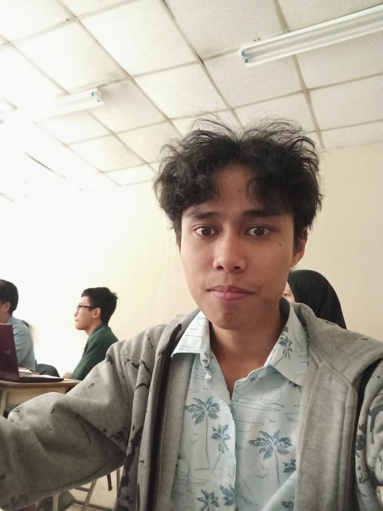
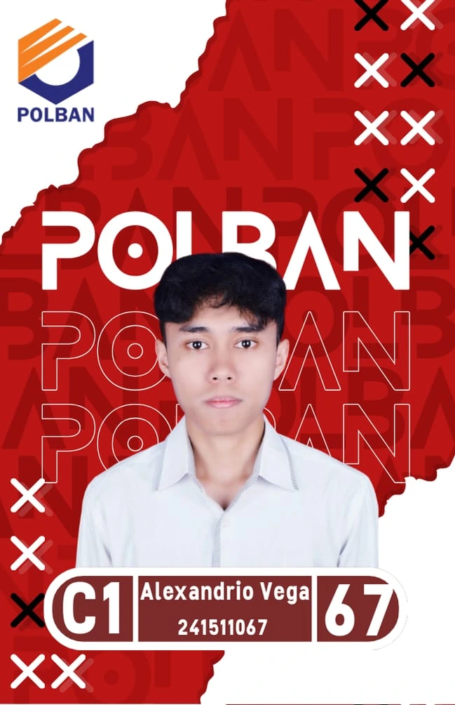
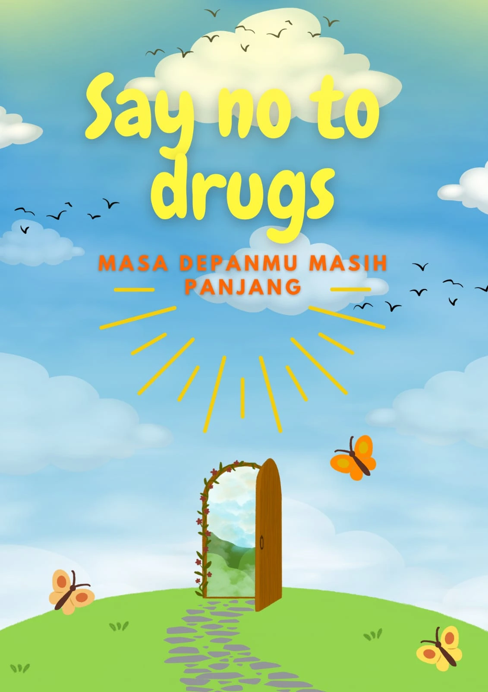

Hi I'm Alexandrio
Perkenalkan, nama saya Alexandrio Vega Bonito, biasa dipanggil Alex. Saat ini saya menempuh pendidikan di Politeknik Negeri Bandung (Polban), jurusan D3 Teknik Informatika, dan sedang berada di semester 3. Keinginan terbesar saya adalah dapat menyelesaikan studi dengan predikat cum laude serta melanjutkan pendidikan hingga jenjang sarjana.

Skills
Saya menguasai pemrograman C dan C++, serta pengembangan web menggunakan HTML dan CSS. Dengan kemampuan ini, saya mampu membangun website interaktif yang memadukan desain menarik dan pengolahan data yang efisien, menghadirkan pengalaman pengguna yang optimal.
C/C++
Riwayat pendidikan
perjalanan pendidikan saya dimulai di SMPN 10 Cimahi, tempat saya membangun dasar ilmu pengetahuan dan keterampilan belajar. Setelah itu, saya melanjutkan ke SMAN 1 Ngamprah, di mana saya semakin mengasah kemampuan akademik sekaligus memperluas wawasan dan pengalaman organisasi. Saat ini, saya menempuh pendidikan tinggi di Politeknik Negeri Bandung (Polban), jurusan D3 Teknik Informatika, untuk mendalami dunia teknologi dan pemrograman sebagai bekal dalam membangun karier di bidang IT.
SMPN 10 CIMAHI
2018 - 2021Membangun dasar ilmu pengetahuan dan keterampilan belajar.
SMAN 1 NGAMPRAH
2021 - 2024Mengasah kemampuan akademik dan memperluas pengalaman organisasi.
POLITEKNIK NEGERI BANDUNG
2024 - 2027Menempuh studi D3 Teknik Informatika untuk mendalami dunia teknologi dan pemrograman.
Portofolio

Gambar id card yang berisi identitas nama dan kelompok, yang digunakand dalam proyek 1.
Desain poster kampanye bertema “Say No to Drugs” sebagai media edukasi masyarakat.
